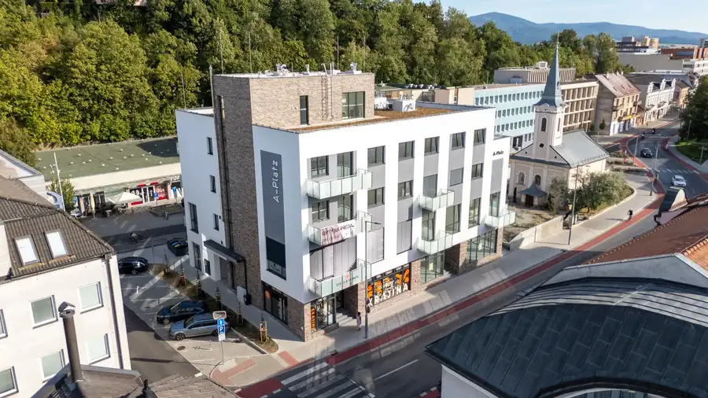
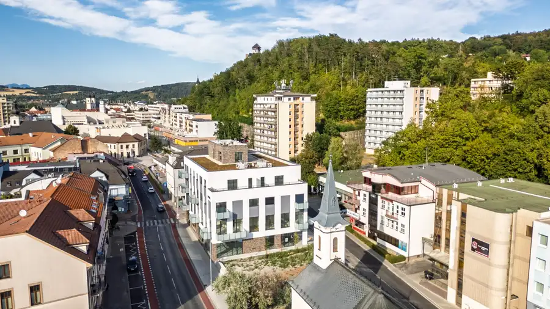

Rodinný dom s pozemkom 2 813 m² na predaj – Radobica
Radobica
- Plocha90 m²
- StavPôvodný stav
- VlastníctvoOsobné
O nehnuteľnosti
Ponúkame na predaj rodinný dom v pôvodnom stave, nachádzajúci sa v pokojnej obci Radobica, obklopenej krásnou prírodou a zeleňou. Nehnuteľnosť je situovaná na slnečnom pozemku s celkovou výmerou 2 813 m², ktorý poskytuje dostatok priestoru na bývanie, záhradkárčenie, hospodárenie alebo rekreačné využitie.Rodinný dom so zastavanou plochou 79 m² je v pôvodnom stave a ponúka možnosť rekonštrukcie podľa potrieb a predstáv nového majiteľa.Dispozične pozostáva zo vstupnej predsiene, z ktorej sa vstupuje do kuchyne, komory a obývacej izby. Obývacia izba je prechodná do spálne. Za kuchyňou sa nachádza kúpeľňa spojená s WC.Súčasťou predaja je aj samostatne stojaca hospodárska budova so zastavanou plochou 86 m², ktorú je možné využiť ako sklad, dielňu alebo priestor na hospodárske účely.Celková výmera predávaných pozemkov predstavuje 2 813 m², z čoho 803 m² tvorí zastavaná plocha a nádvorie a 2 080 m² orná pôda. Pozemok poskytuje dostatok priestoru na vytvorenie záhrady, pestovanie, chov alebo vybudovanie príjemného zázemia na oddych.Radobica sa nachádza v okrese Prievidza na rozhraní pohorí Vtáčnik a Tríbeč. Okolitá príroda ponúka množstvo možností na turistiku, cykloturistiku, hubárčenie a aktívny oddych. Obec poskytuje pokojné vidiecke bývanie s dobrou dostupnosťou do Partizánskeho a Prievidze.Nehnuteľnosť je vhodnou voľbou pre záujemcov, ktorí hľadajú rodinný dom s priestranným pozemkom, priestor na hospodárenie alebo nehnuteľnosť s potenciálom vytvoriť si bývanie podľa vlastných predstáv.Výhody nehnuteľnosti:* pozemky s celkovou výmerou 2 813 m²,* rodinný dom a samostatná hospodárska budova,* dostatok priestoru na záhradu a hospodárenie,* pokojná vidiecka lokalita v blízkosti prírody,* možnosť rekonštrukcie podľa vlastných predstáv,* vhodné na trvalé bývanie aj rekreačné využitie,* dobrá dostupnosť do Partizánskeho a Prievidze.Cena: 135 000 €Pre viac informácií alebo dohodnutie obhliadky nás neváhajte kontaktovať.Cena je konečná vrátane autorizovaného právneho servisu, poplatkov za prevod vlastníctva a profesionálneho hypotekárneho poradenstva.V prípade záujmu o obhliadku ma kontaktujte na: 0911 374 467, michaela@bartalosova.sk
Parametre
| Druh | Rodinný dom |
|---|---|
| Dátum zverejnenia | 24. 6. 2026 |
| Energetický certifikát budovy | nie je |
| Plocha pozemku | 7148 m² |
| Počet nadzemných podlaží | 1 |
| Rok výstavby | 1960 |
| Stav nehnuteľnosti | Pôvodný stav |
| Terén pozemku | Mierne svahovitý |
| Typ | Predaj |
| Typ konštrukcie | Tehlová |
| Vlastníctvo | Osobné |
| Vykurovanie | Ústredné |
| Zastavaná plocha | 79 m² |
| Úžitková plocha | 90 m² |
Kde to je


Mohlo by Vás zaujímať

BytNové7 381 000 €3-izbový byt na predaj Trenčín | novostavba v centre | terasa 26,9 m² | a–platz Trenčín 3-izbový88.04 m²4. podlažie Ponúkame na predaj 3-izbový byt č. 8 v skolaudovanej novostavbe A–PLATZ na Námestí sv. Anny v centre Trenčína.Byt má výmeru 88,04 m² a jeho výraznou… BytNové10 343 989 €3-izbový byt na predaj Trenčín | novostavba v centre | balkón | a–platz Trenčín 3-izbový85.57 m²4. podlažie Ponúkame na predaj 3-izbový byt č. 7 v skolaudovanej novostavbe A–PLATZ na Námestí sv. Anny v centre Trenčína.Byt má výmeru 85,57 m² a balkón s…
BytNové10 355 411 €3-izbový byt na predaj Trenčín | Novostavba v centre | A–PLATZ Trenčín 3-izbový96.45 m²3. podlažie Ponúkame na predaj 3-izbový byt č. 6 v skolaudovanej novostavbe A–PLATZ na Námestí sv. Anny v centre Trenčína.Byt má výmeru 96,45 m² a balkón s…